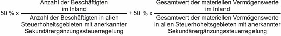

(1) Der auf die Bundesrepublik Deutschland entfallende Anteil am Gesamtbetrag der Steuererhöhungsbeträge entspricht vorbehaltlich des § 14 dem Gesamtbetrag der Steuererhöhungsbeträge im Sinne des § 11 multipliziert mit der Inlandsquote. Die Inlandsquote ist für jedes Geschäftsjahr für die Unternehmensgruppe wie folgt zu ermitteln:

Für die Zwecke dieses Paragraphen gelten die folgenden Begriffsbestimmungen:
- 1.
„Anzahl der Beschäftigten im Inland“ ist die Gesamtzahl der Beschäftigten aller im Inland belegenen Geschäftseinheiten der Unternehmensgruppe ist.
- 2.
„Anzahl der Beschäftigten in allen Steuerhoheitsgebieten mit anerkannter Sekundärergänzungssteuerregelung“ ist die Gesamtzahl der Beschäftigten aller Geschäftseinheiten der Unternehmensgruppe, die in einem Steuerhoheitsgebiet belegen sind, in dem für das Geschäftsjahr eine anerkannte Sekundärergänzungssteuerregelung anzuwenden ist.
- 3.
„Gesamtwert der materiellen Vermögenswerte im Inland“ ist die Summe der Nettobuchwerte der materiellen Vermögenswerte aller im Inland belegenen Geschäftseinheiten der Unternehmensgruppe.
- 4.
„Gesamtwert der materiellen Vermögenswerte in allen Steuerhoheitsgebieten mit anerkannter Sekundärergänzungssteuerregelung“ ist die Summe der Nettobuchwerte der materiellen Vermögenswerte aller Geschäftseinheiten der Unternehmensgruppe, die in einem Steuerhoheitsgebiet belegen sind, in dem für das Geschäftsjahr eine anerkannte Sekundärergänzungssteuerregelung anzuwenden ist.
(2) Die Anzahl der Beschäftigten im Sinne des Absatzes 1 entspricht der Gesamtzahl aller Arbeitnehmer auf der Basis von Vollzeitäquivalenten aller Geschäftseinheiten, die in dem betreffenden Steuerhoheitsgebiet belegen sind. Einer in einem Steuerhoheitsgebiet belegenen Betriebsstätte sind die Arbeitnehmer zuzuordnen, deren Lohnaufwand in der Rechnungslegung dieser Betriebsstätte im Sinne des § 42 Absatz 1 und 2 enthalten ist. Als Arbeitnehmer im Sinne der Sätze 1 und 2 gelten auch unabhängige Auftragnehmer, die an der gewöhnlichen Geschäftstätigkeit der Geschäftseinheit mitwirken. Für die Zwecke dieses Absatzes bleiben Arbeitnehmer und unabhängige Auftragnehmer von Investmenteinheiten unberücksichtigt.
(3) Materielle Vermögenswerte im Sinne des Absatzes 1 umfassen die materiellen Vermögenswerte des Anlage- und Umlaufvermögens, jedoch keine Barmittel oder Barmitteläquivalente, immateriellen oder finanziellen Vermögenswerte, aller Geschäftseinheiten, die in dem betreffenden Steuerhoheitsgebiet belegen sind. Einer in einem Steuerhoheitsgebiet belegenen Betriebsstätte sind die materiellen Vermögenswerte zuzuordnen, die in der separaten Ergebnisrechnung dieser Betriebsstätte im Sinne des § 42 Absatz 1 und 2 enthalten sind. Für die Zwecke des Absatzes 3 bleiben materielle Vermögenswerte von Investmenteinheiten unberücksichtigt.
(4) Nettobuchwert im Sinne des Absatzes 1 ist das arithmetische Mittel, aus den für einen materiellen Vermögenswert zu Beginn und Ende des Geschäftsjahres im Jahresabschluss ausgewiesenen Werten nach Berücksichtigung der kumulierten Abschreibungen und substanzbedingten Wertminderungen.